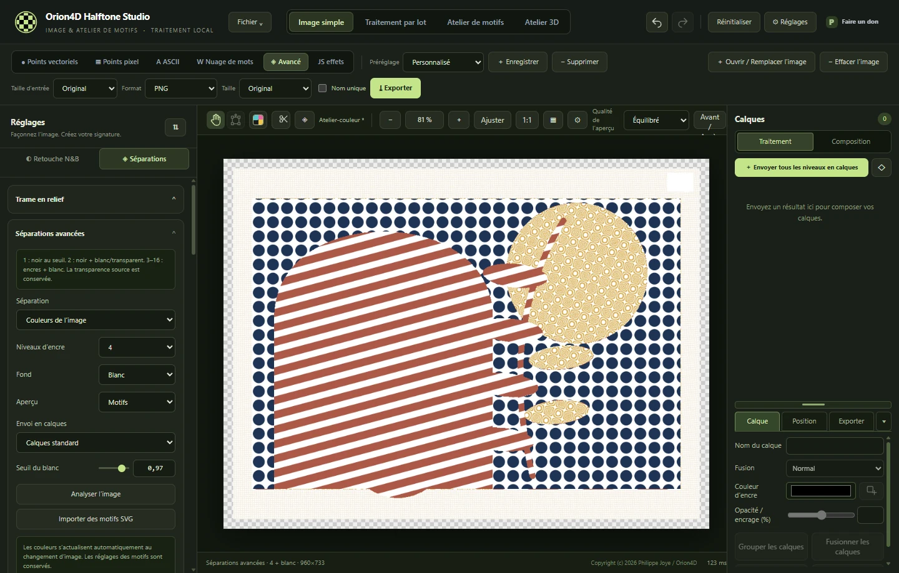
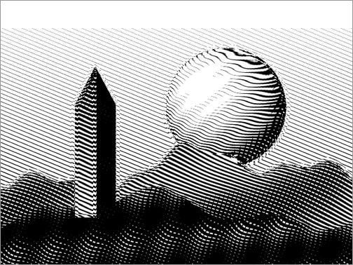
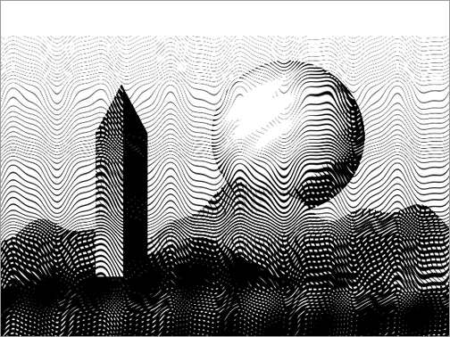
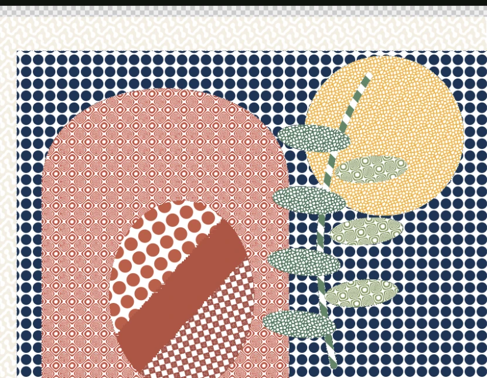
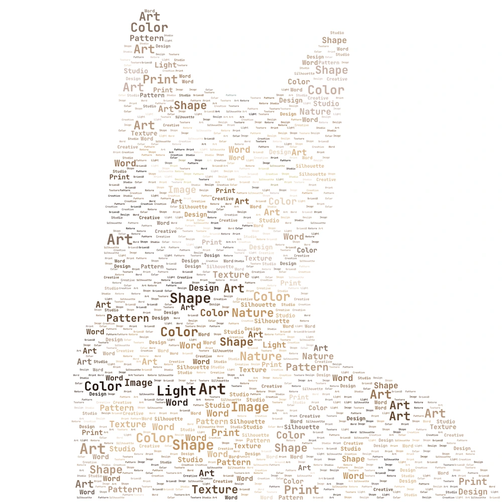
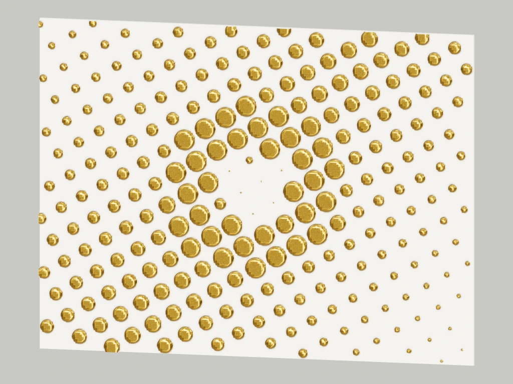

V2.0.0 · WINDOWS X64
Orion4D Halftone Studio
Trames, encres et relief
Transformez vos images en gravures, composez des séparations d’encre ou sculptez vos trames en 3D. Tous les traitements d’image s’exécutent en local.

Les outils
Ouvrez le chapitre qui correspond à votre projet, de la première trame au fichier final.
Trames et gravures
Points vectoriels ou pixel, hachures continues et pointillisme adaptatif.
Séparations d’encre
CMJN, bichromie, trichromie et jusqu’à huit encres avec profils ICC.
ASCII et nuages de mots
Composez une silhouette SVG ou un portrait en caractères et en mots.
Calques et exports
Superposez vos encres et exportez des compositions ou des films d’impression.
Atelier 3D
Sculptez une trame, préparez une lithophanie ou animez un relief.
JS effets et MCP local
Écrivez des effets avec des réglages dynamiques et pilotez les outils 2D via MCP.
Taille d’entrée et taille d’export indépendantes
Traitez l’image à sa taille originale, à un pourcentage ou à une dimension fixe. Choisissez ensuite la taille de sortie, en image simple comme par lot.
Rendus de l’atelier
Explorez les exemples et retrouvez les réglages qui permettent de les reproduire.

JS EFFETS
Hachures topographiques
Les tons de l’image déforment les lignes. Un deuxième réseau apparaît dans les ombres.
Créer un effet paramétrable ↗Comparer les sept traitements N&B ↗

TRAME RÉTRO
Guilloché de sécurité
Des lignes ondulées se croisent à mesure que les tons s’assombrissent.
Explorer les moteurs de trame ↗
SÉPARATIONS
Des motifs par encre
Une même image combine des trames distinctes. Le panneau Avancé permet de régler séparément leur motif, leur couleur et leur couverture.
Préparer une séparation ↗
NUAGE DE MOTS
Une silhouette en mots
Le masque de l’image définit le placement. La taille, la rotation et les couleurs des mots dessinent la silhouette.
Composer un nuage de mots ↗
ATELIER 3D
Dorure simulée
L’atelier 3D permet de régler la matière, la lumière et le cadrage d’un rendu de trame.
Éclairer une trame en relief ↗